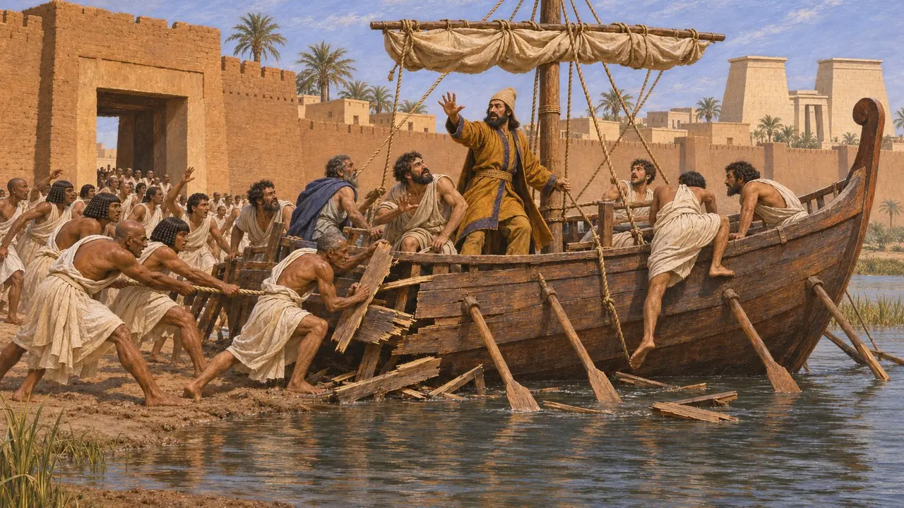
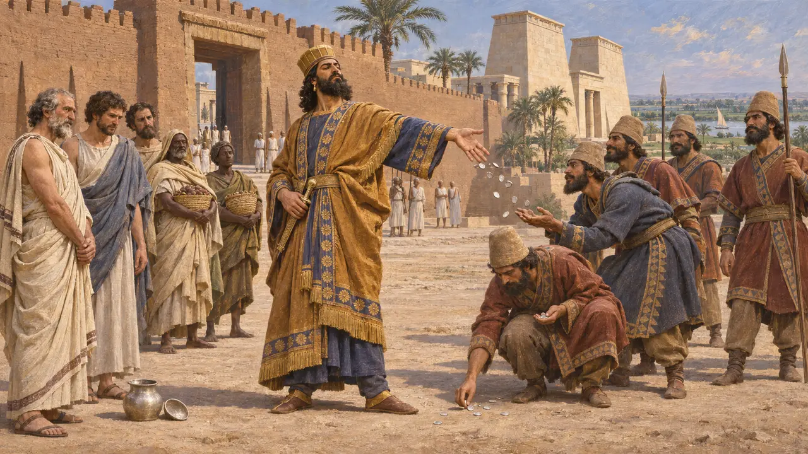
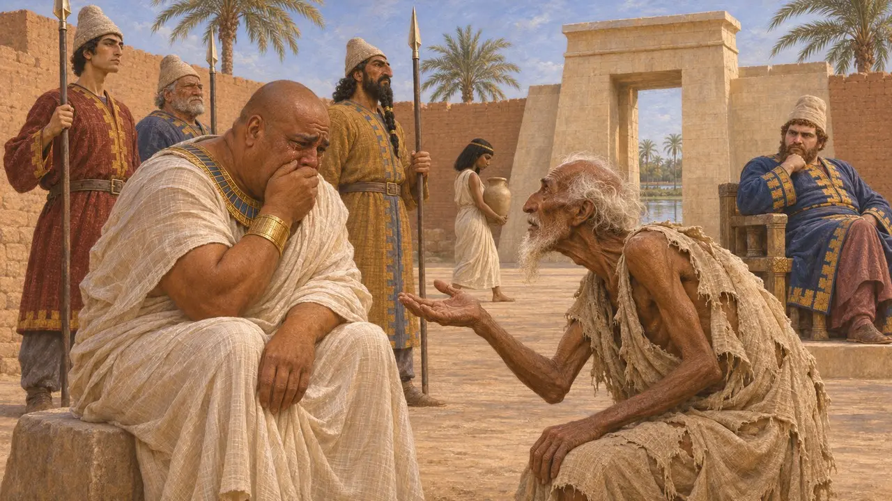
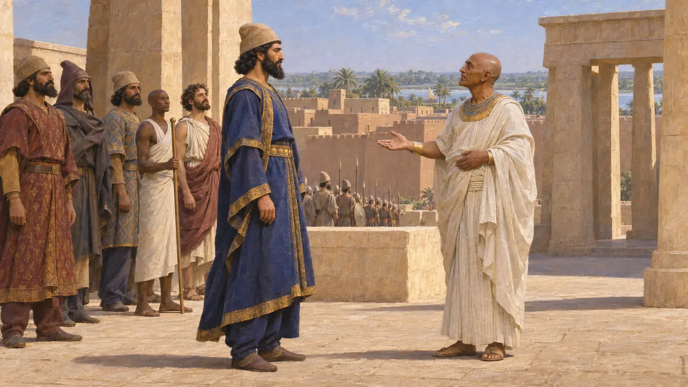
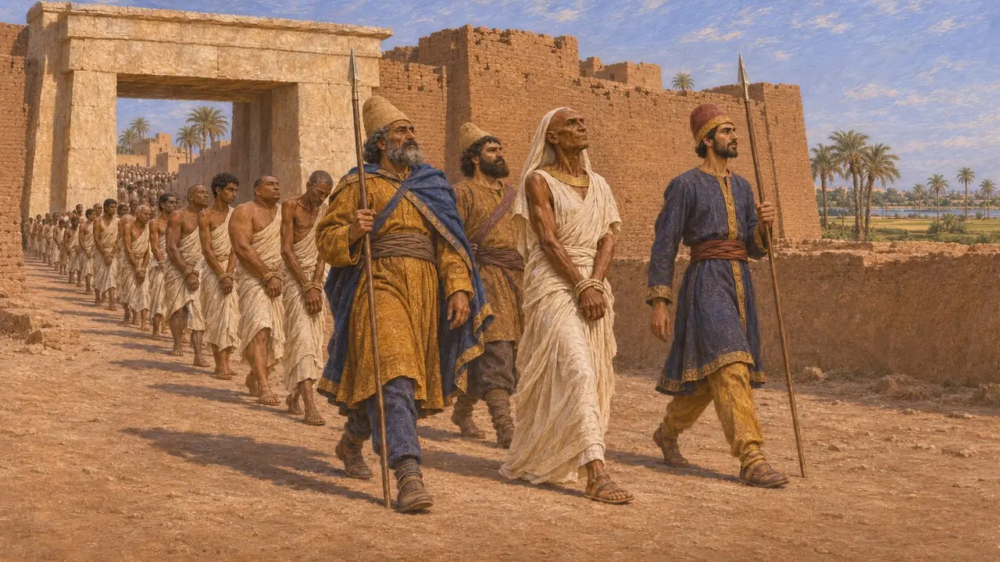

حصار منف
حصار قمبيز للمدينة الملكية في مصر والاستيلاء عليها بعد بيلوزيوم، 525 ق.م
في اللعبة: المستوى 2: حامل الرمح
بعد هزيمته في بيلوزيوم، تراجع الجيش المصري والملك بسماتيك الثالث إلى منف، المدينة الملكية القديمة عند رأس دلتا النيل. وحاصرها قمبيز واستولى عليها، على الأرجح في عام 525 ق.م، وصار بسماتيك أسيراً لديه. وبسقوط منف انتهت الأسرة السادسة والعشرون، وصارت مصر ولاية فارسية لأكثر من قرن.
في اللعبة: تتبع اللعبة هيرودوت 3.13 عن كثب: سفينة الرسول، والحصار، وأسر بسماتيك، والهدايا الليبية. أما قتل طاقم سفينة الرسول والهدايا فلا يُعرفان إلا من الكتّاب اليونانيين، لا من السجلات المصرية أو الفارسية.

سفينة المنادي
رواية قديمةيقول هيرودوت إن المصريين فرّوا من بيلوزيوم إلى منف في فوضى. فأرسل قمبيز سفينة من ميتيليني في لسبوس صعودًا في النيل، تحمل نذيرًا فارسيًا ليدعوهم إلى الاستسلام. وحين بلغت السفينة المدينة، اندفع المصريون خارجين، فحطّموها ومزّقوا بحّارتها إربًا، ثم حملوا الرفات إلى داخل الأسوار.
Herodotus 3.13

الحصار والاستسلام والهدايا الغربية
رواية قديمةيقول هيرودوت إن الفرس ضربوا بعد ذلك الحصار على منف، وبعد مدة استسلم المصريون. فاستولى الذعر على الليبيين المجاورين لمصر، فخضعوا دون قتال، ووافقوا على دفع الجزية، وأرسلوا الهدايا، وفعلت المدينتان اليونانيتان قوريني وبرقة مثلهم. ويضيف أن قمبيز رحّب بهدايا الليبيين، لكنه رأى فضة القورينيين قليلة، فنثرها بيده على جنوده.
Herodotus 3.13

امتحان بسماتيك
أسطورة لاحقةيروي هيرودوت حكاية أخلاقية تجري بعد عشرة أيام من الاستيلاء على المدينة. أجبر قمبيز بسماتيك على أن يرى ابنته تجلب الماء وهي ترتدي ثياب الإماء، وابنه يُساق إلى الإعدام مع ألفين من شباب المصريين، عشرة مقابل كل رجل قُتل على السفينة الميتيلينية. ظل بسماتيك صامتاً، لكنه بكى حين رأى رفيقاً قديماً وقد انتهى به الحال إلى التسوّل. ويقول هيرودوت أيضاً إن بسماتيك دبّر لاحقاً تمرداً ومات بعد أن شرب دم ثور.
Herodotus 3.14-15

ما تُظهره السجلات المصرية
في السجلاتلا يوجد نص مصري من تلك الحقبة يصف الحصار نفسه. يقول التمثال المنقوش لوجاحور رسنت، القائد البحري في عهد أحمس الثاني وبسماتيك الثالث، إن قمبيز جاء إلى مصر مع أجانب من كل أرض وصار حاكم البلاد كلها. ثم أصبح وجاحور رسنت رئيسًا لأطبائه ووضع ألقابه الملكية المصرية. ويتحدث التمثال أيضًا عن اضطراب عظيم في مصر؛ ويختلف المؤرخون في ما إذا كان المقصود الفتح أم اضطرابات لاحقة.
Statue of Udjahorresnet (Vatican Museums)

التاريخ والروايات الأخرى
متنازع عليهيُؤرَّخ الفتح عادةً بعام 525 ق.م، لكن بعض المؤرخين يرجّحون عام 526 ق.م، لأن الشواهد المصرية على نهاية حكم بسماتيك وبداية حكم قمبيز تحتمل القراءتين. ويروي كتيسياس قصة مختلفة: فهو يسمّي الملك المصري أميرتايوس، ويقول إن النصر تحقق بخيانة خصيّ من رجال البلاط، وإن الملك الأسير أُرسل إلى سوسا مع ستة آلاف مصري. ويفضّل المؤرخون عمومًا رواية هيرودوت في الخطوط العامة، لكن ليس في كل التفاصيل.
Ctesias, Persica (summary by Photius); J. F. Quack, Zum Datum der persischen Eroberung Ägyptens unter Kambyses, 2011; P. Briant, From Cyrus to Alexander, 2002
المصادر
- Herodotus 3.13-15
- Statue of Udjahorresnet (Vatican Museums)
- Ctesias, Persica (summary by Photius)
- P. Briant, From Cyrus to Alexander, 2002
- A. Kuhrt, The Persian Empire: A Corpus of Sources from the Achaemenid Period, 2007
- J. F. Quack, Zum Datum der persischen Eroberung Ägyptens unter Kambyses, 2011